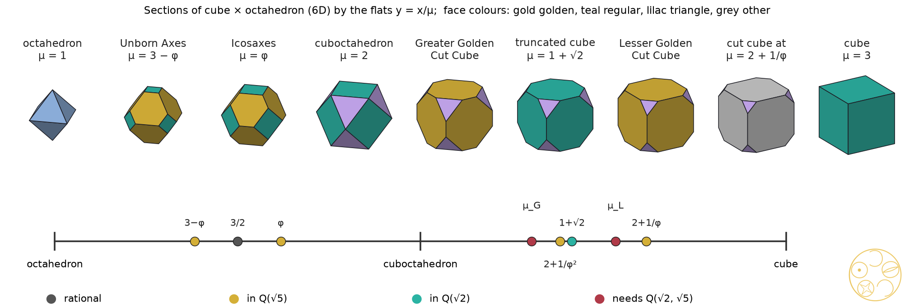

Golden structures live in the field of √5 and the Golden Cut Cubes need √2 as well, so no golden structure in any dimension holds them; in the six-dimensional product of a cube and an octahedron the lattice selects Icosaxes at the golden slope and the truncated cube at the silver one
The golden ratio has a home in higher dimensions: the six-dimensional cube, the four-dimensional 120-cell and the eight-dimensional E8 lattice all carry it, and quasicrystals are their shadows. Four of the five golden pairs of the regular solids fit there. The two Golden Cut Cubes do not, and we prove that they never can. Their depth needs the square root of two, the diagonal of a square, together with the square root of five, and nothing built from the golden ratio alone ever produces the square root of two. DICTO proposed six dimensions as the natural home of the cube and octahedron as a pair. There the octahedron's golden pair comes out by itself: cut the product of a cube and an octahedron at the Fibonacci slope and you get Icosaxes, exactly where the shortest vectors of the lattice cast their shadow. Ask the same of the cube and the answer is the silver ratio, 1 + √2, the Archimedean truncated cube.
A golden cut of a Platonic solid cuts every corner equally so that each face becomes a truncated polygon whose two side lengths are in the golden ratio φ; #88 proved that each Platonic solid has exactly two, the Greater (deeper) and the Lesser [1]. #89 found all five pairs as slices of four-dimensional solids, four of them regular, and proved that the cubes are not slices of any regular four-dimensional solid; they are slices of the rectified tesseract, which passes through every corner-cut cube, so there the golden depth is not singled out [2]. #89 closed with the reason, which this paper proves: the square's diagonal √2.
DICTO proposed that six dimensions would be a natural home for the cube and octahedron as a pair, since the 6-cube's symmetry group B6 contains the cube's group and Z6 projects onto the six axes of the icosahedron, the classical cut-and-project origin of icosahedral quasicrystals [3–5]. We follow the proposal in three steps. The main theorem (Section 3) is the field obstruction: the Golden Cut Cubes need Q(√2, √5), and no golden structure supplies √2. Sections 4 and 5 treat the Galois twins and the 6-cube. Sections 6 and 7 treat the product of a cube and an octahedron: here the octahedron's golden pair appears at golden heights, and the lattice selects Icosaxes at the Fibonacci slope and the truncated cube at the silver ratio.
A trivial higher-dimensional home always exists: a centrally symmetric solid with k pairs of parallel faces is a section of the k-cube, so every cut cube (7 pairs) is a section of the 7-cube. We look instead for a natural structure in which the golden depth comes out by itself.
A cube with unit edges cut at x loses every corner to a plane meeting the three edges there at distance x; each square becomes an octagon with corner sides √2·x and original sides 1 − 2x. It is golden when long over short is φ: xG = φ/(√2 + 2φ) ≈ 0.347943 (Greater Golden Cut Cube) and xL = 1/(√2φ + 2) ≈ 0.233196 (Lesser) [1]. We put the cube at [−1, 1]3: the corners of the cut cube are then the signed permutations of (1, 1, t), t = 1 − 2x, and the solid is the cube cut by the octahedron |x1| + |x2| + |x3| ≤ μ with μ = 2 + t. The golden values are tG = 1/(1 + √2φ) and tL = 1/(1 + √2/φ). The octahedron's golden pair are DICTO's Icosaxes (Greater) and Unborn Axes (Lesser) [1].
For a finite set of points, its distance field is the field generated by all ratios of squared distances between its points. It does not change under rotation, reflection or scaling, so it is a property of the shape.
The known picture, rebuilt exactly (s1, 13 checks). The six icosahedral axes ai, one for each pair of opposite corners of the icosahedron (0, ±1, ±φ) and its cyclic shifts, have Gram matrix entries 1 and ±1/√5 after normalising; P = G/2 is the projector of R6 onto physical space and I − P, its Galois conjugate (√5 ↦ −√5), the projector onto internal space. The 6-cube's shadows in both spaces are rhombic triacontahedra (32 corners, 30 rhombi with diagonals in ratio φ); its central section by physical space is the regular dodecahedron (Figure 1a, b). The signed permutations of R6 that keep physical space form a group of order 120, the full icosahedral group. The 120 unit icosians span a lattice of rank 8 which, with the norm 2(a + c) for |q|2 = a + c√5, has Gram determinant 1 and is even, so it is E8; its 240 roots are the units and the units divided by φ, whose H4 shadows are two 600-cells with radii in ratio φ [6, 7]. All of these coordinates lie in Q(√5).
Proof. (a) For the cut cube with corners at the signed permutations of (1, 1, t), the squared distances include 4, 4t2 and 2(1 − t)2; their ratios give t2 and then t, and every squared distance is a polynomial in t with rational coefficients, so the distance field is Q(t). The octagon's corner side over original side is √2·x/(1 − 2x) = (1 − t)/(√2 t), so the golden condition reads (1 − t)/t = √2φ±1, and Q(t) = Q(√2φ). Now (√2φ)2 = 2φ + 2, so φ ∈ Q(√2φ), and then √2 ∈ Q(√2φ); hence Q(t) = Q(√2, √5), of degree 4. For the other eight cuts the solids have coordinates in Q(√5) and the cut fractions 1/3, (7 − √5)/22, 1/φ2 and 1/(φ√5) lie in Q(√5); all their squared-distance ratios were checked exactly to lie in Q(√5) (s2).
(b) A flat over Q(√5) meets Q(√5)n in points of Q(√5)n (Cramer's rule), and the orthogonal projector B(BTB)−1BT onto the span of a basis B over Q(√5) has entries in Q(√5). So every point of a section or projection has coordinates in Q(√5), and all squared-distance ratios of any subset lie in Q(√5). A similar copy of a Golden Cut Cube has the same distance field Q(√2, √5) by (a), which is not contained in Q(√5).
(c) The shadow of y ∈ Z6 is Σ yiai ∈ Q(√5)3 and the windows and tiles are hulls of such shadows; the icosian coordinates of E8 and the 600-cell lie in Q(√5); the regular four-dimensional solids have coordinates in Q(√5). The case of Q(√2) is the same argument, since √5 ∉ Q(√2). □
The root of the difference is #88's constant cn = 2 cos(π/n): the corner side of a cut n-gon is cnx, and c3 = 1 and c5 = φ lie in Q(√5) while c4 = √2 does not. The square's diagonal is the whole obstruction.
Proof. Put s = (1 − t)/t, so s = √2φ for tG and s = √2/φ for tL. From s2 = 2φ2 we get φ = s2/2 − 1, and φ2 = φ + 1 gives s4 − 6s2 + 4 = 0, whose roots are ±√2φ and ±√2/φ. Substituting s = (1 − t)/t and clearing t4: (1 − t)4 − 6t2(1 − t)2 + 4t4 = 1 − 4t + 8t3 − t4, so tG and tL are roots of z4 − 8z3 + 4z − 1, which is their minimal polynomial since both have degree 4 (Main Theorem (a)). The automorphism sends φ to 1 − φ = −1/φ and so √2φ to √2/φ. The values of μ were computed exactly (s2, s3). □
So the two Golden Cut Cubes are one algebraic object seen through two embeddings. The other golden pairs are not paired this way: their two depths lie in Q(√5) and are not conjugates of each other (for the dodecahedron xG = 1/3 is rational; for the triangle-faced solids the conjugate of xG exceeds 1). Written as a golden height a + (b − a)/φ2 with a, b in Q(√2), which can be done in exactly one way, μG sits between a = 1 and b = 3 + √2, and μL between 7 − 3√2 and 5 − 2√2 (s3, exact): not between any two of the natural layers octahedron (μ = 1), cuboctahedron (2) and cube (3).
| golden pair (#88) | distance field | corner module: rank over Z | golden inflation φkM ⊆ M |
|---|---|---|---|
| dodecahedron, greater / lesser | Q(√5) | 6 / 6 | k = 3 / 3 |
| icosahedron, greater / lesser | Q(√5) | 6 / 6 | k = 3 / 3 |
| cube, greater / lesser | Q(√2, √5) | 6 / 6 | none (no real λ ∉ Z) |
| tetrahedron, greater / lesser | Q(√5) | 6 / 6 | k = 6 / 6 |
| octahedron, greater / lesser (Icosaxes / Unborn Axes) | Q(√5) | 6 / 6 | k = 3 / 3 |
Table 1. The ten golden cuts of #88 in D·I·C·T·O order: distance field (Main Theorem), rank of the integer span M of the corners, and the smallest power of φ that maps M into itself (Theorem 2). Exact (s2, 16 checks).
Proof. Ranks and inflations were computed exactly by Hermite normal forms (s2). For the cubes, M lies in (Z + Zt)3 and contains (2, 0, 0) and (2t, 0, 0). If λM ⊆ M then 2λ = a + bt with integers a, b, and λ·2t ∈ Z + Zt gives bt2 ∈ Q + Qt, impossible for b ≠ 0 since t has degree 4. So λ is rational, and a rational number that maps a lattice of rank 6 into itself is an integer. □
The Golden Cut Cubes do have a six-dimensional lift, but one with a slope of degree 4 and no self-similarity. A golden structure in the quasicrystal sense, one whose module is stable under a power of φ, holds the other four pairs and never the cubes.
Proof. A section by the flat x ↦ Lx + b is {x : |ℓi·x + bi| ≤ 1, i = 1, …, 6}, whose faces lie in at most six directions. A cube cut at its corners has 14 faces in seven directions (three octagon pairs and four triangle pairs; checked exactly for both Golden Cut Cubes, s3). Tiles of a section of the honeycomb are sections of single 6-cubes. A projection of a cube is a zonotope, all of whose faces are centrally symmetric, and a cut cube has triangles. □
The icosahedral embedding also cannot pass on the cube's symmetry: the signed permutations keeping physical space form the icosahedral group of order 120, whose largest subgroup in common with the cube's group is the pyritohedral group Th of order 24. A structure with only Th can still give a solid with full cube symmetry by joining a pyritohedral set to its mirror twin. This is how Icosaxes and Unborn Axes arise (Figure 1c, d; Proposition 5), but by the Main Theorem it never gives a Golden Cut Cube.
Cube × cube. Write R6 = R3 ⊕ R3 and let the cube's group act on both halves at once (the diagonal B3 in B3 × B3 ⊂ B6). By Schur's lemma, the three-dimensional flats that keep this symmetry and meet each half only in 0 are the graphs Fμ = {(x, x/μ)}; a general graph {(x, Ax)} keeps it only when A is a multiple of the identity. Sections of the product C × C of two cubes by graphs are C ∩ A−1C, with at most six face directions, so again never a cut cube. With A an icosahedral five-fold rotation (entries in Q(√5); two cubes of the compound of five) the section has 8 corners and 12 triangles and keeps only 6 of the cube's 48 symmetries (s3).
DICTO proposed the cube and octahedron together as the pair whose home is six-dimensional. Take the product of the cube C = [−1, 1]3 and its polar octahedron C* = {|y|1 ≤ 1}, a six-dimensional solid with symmetry B3 × B3. Its section by Fμ is C ∩ μC*: the cube cut by an octahedron. As μ runs from 1 to 3 it passes through every corner-cut octahedron (1 < μ < 2, corners the signed permutations of (1, μ − 1, 0)) and every corner-cut cube (2 < μ < 3, corners the signed permutations of (1, 1, μ − 2)). All eleven stations of Table 2 were built exactly and matched with the cut solids corner to corner (s3, 24 checks).
| μ | section (exact match) | field of μ |
|---|---|---|
| 1 | octahedron | Q |
| 3 − φ = 1 + 1/φ2 ≈ 1.381966 | Unborn Axes (Lesser Golden Cut Octahedron) | Q(√5) |
| 3/2 | truncated octahedron (Archimedean) | Q |
| φ = 1 + 1/φ ≈ 1.618034 | Icosaxes (Greater Golden Cut Octahedron) | Q(√5) |
| 2 | cuboctahedron | Q |
| 4 + (3/2)√2 − √5 − (1/2)√10 ≈ 2.304114 | Greater Golden Cut Cube | Q(√2, √5) |
| 2 + 1/φ2 ≈ 2.381966 | cut cube, octagon sides in ratio φ/√2 ≈ 1.144 | Q(√5) |
| 1 + √2 ≈ 2.414214 | truncated cube (Archimedean) | Q(√2) |
| 4 − (3/2)√2 + √5 − (1/2)√10 ≈ 2.533609 | Lesser Golden Cut Cube | Q(√2, √5) |
| 2 + 1/φ ≈ 2.618034 | cut cube, octagon sides in ratio √2φ ≈ 2.288 | Q(√5) |
| 3 | cube | Q |
Table 2. Sections C ∩ μC* of cube × octahedron by the flats Fμ (s3, exact).

The octahedron's pair sits at the golden heights 1 + 1/φ2 and 1 + 1/φ of the layer from the octahedron to the cuboctahedron. The golden heights of the cube's layer, 2 + 1/φ2 and 2 + 1/φ, give the same cut cubes as #89's rectified tesseract at h = 1/φ2 and 1/φ [2], whose octagons have sides in ratio φ/√2 and √2φ: off golden by √2, as the Main Theorem requires.
The sweep from the octahedron to the cube is not new to this series: it is the weight walk of the web of bonds. In #48 [14] the golden pair appeared in the space-filling family T(x), T(1/x) of truncated octahedra, the signed permutations of (1, s, 0) with s = x/(1 + x); #52 and #53 [15, 16] followed the bonds as one weight slides between the two kinds of site of a network, and in the caesium chloride network the cells run from octahedra and cuboctahedra through truncated octahedra to truncated cubes, ending in cubes; #51 [17] did the same on the octet, from Kepler's rhombic dodecahedron to the cube, and #58 [18] carried the walk to every close-packed stacking, the setting of the Hexagonality Law. The sections of cube × octahedron are those caesium chloride cells exactly.
Proof. The wall between A at O and B at (1, 1, 1) is x + y + z = (3 + wA − wB)/2, and those between A at O and A at (±2, 0, 0) are x = ±1 (equal weights); the eight B neighbours give the octahedron μC*, the six A neighbours the cube C. Exchanging A and B exchanges wA and wB, so the B cell has 3 − μ in place of μ. For T(x): the section's corners are the orbit of (1, μ − 1, 0), so μ − 1 = s; replacing x by 1/x replaces s by 1 − s and μ by 3 − μ. At every station of Table 2 the two volumes add up to 8, the volume of the cell of 2Z3 holding one A and one B site (s12, exact). ∎
In this dictionary the six-dimensional stations are the named stops of the bond papers: Kelvin's truncated octahedron at x = 1 is the self-paired section μ = 3/2; the Icosaxes at x = τ (= φ, the stop of #48 and the app [14]) is the section at μ = φ, paired with the Unborn Axes at 3 − φ; the cuboctahedron at μ = 2 pairs with the octahedron at μ = 1, the flip of #53. On the cube side, μ > 2, the partner 3 − μ is less than 1 and its section is a whole octahedron: each cut cube, the two Golden Cut Cubes and the Archimedean truncated cube (μ = 1 + √2, the uniform truncated cubic honeycomb of #53) among them, fills space with regular octahedra, the filling of #89 [2]. So the six-dimensional flat that selects Icosaxes (Theorem 4) is the same parameter that the bond papers reached by sliding a weight, and the octahedron side and the cube side of #90 are the two halves of one space-filling walk. The walk can be followed in the app's Global Web of Bonds world [16].
Two involutions act on this sweep. The space-filling partner μ ↦ 3 − μ of Proposition 6 fixes Kelvin's 3/2; the core turn of #81 [19], which swaps the distances of the two kinds of face (here 1 for the cube's and μ/√3 for the octahedron's), sends the section at μ to a similar copy of the section at 3/μ and fixes μ = √3, where the two distances are equal. On the polar side, polar(C ∩ μC*) = conv(C ∪ μC*)/μ is for μ ≤ 2 a cube with a square pyramid of height μ − 1 (in half cube edges) on each face: this is #54's Theorem B [20], with heights x/(1 + x) and 1/(1 + x) for T(x) and T(1/x), 1/φ for Icosaxes and 1/φ² for Unborn Axes, adding up to 1, Kepler's rhombic dodecahedron at μ = 2.
Like the rectified tesseract, cube × octahedron sweeps through every depth, so the section alone selects nothing. Six dimensions add a lattice. The orthogonal shadow of a lattice point (m, n) ∈ Z3 ⊕ Z3 on Fμ is proportional to m + n/μ, and for μ = φ this is the Fibonacci product: Z6 is cast onto Z[φ]3 with the Galois-conjugate internal space, the cube-symmetric golden structure of Z6, three Fibonacci chains along the three axes [8]. The 60 roots of D6 fall into four orbits under the diagonal group; the 24 mixed roots ea ± fb (a ≠ b) cast the signed permutations of (1, 1/μ, 0), while the section's corners are the signed permutations of (1, μ − 1, 0).
Proof. Multiplying the shadow by μ gives w = μm + n. The section's corners form the orbit of (1, μ − 1, 0) or (1, 1, μ − 2), so equality of orbits means that |w|, sorted, is proportional to that pattern: equations such as μmk + nk = ±(μ − 2)(μmi + ni), polynomials of degree at most 2 in μ with integer coefficients. Either they vanish identically or μ is a root of a nonzero one. μG and μL have degree 4 (Theorem 1). For a mixed root (m, n) = (ea, ±fb) the shadow pattern is (1, 1/μ, 0), equal up to scale to (1, μ − 1, 0) exactly when μ(μ − 1) = 1, that is μ = φ. Part (a) and the enumeration of all 454 orbit representatives in {−2, …, 2}6 (38 isolated values of μ, all of degree at most 2, the only one from norm 2 being φ) are exact (s3); part (c) is a floating-point search of {−4, …, 4}6 with each answer confirmed exactly (s4). A vector with an entry of size 5 or more has norm at least 25, so the norms below 25 are the true minima. □
So in six dimensions the golden ratio comes out by itself on the octahedron side: requiring that the cut through cube × octahedron agree with the shadow of the shortest lattice vectors gives μ = φ, the Fibonacci slope, and Icosaxes. The same requirement on the cube side gives the silver ratio 1 + √2 at norm 3, the Archimedean truncated cube. The octahedron's layer is golden and the cube's is silver, and the Golden Cut Cubes, which need both √2 and √5, are selected by no lattice vector at all.
Proof. At μ = φ the corners (1, φ − 1, 0) = (1, 1/φ, 0) scale by φ to (φ, 1, 0); the icosahedron (0, ±1, ±φ) and cyclic and its mirror twin (cyclic shifts in the other order) together give all signed permutations. At μ = 3 − φ the corners (1, 2 − φ, 0) = (1, 1/φ2, 0) scale by φ2 to (φ2, 1, 0); the dodecahedron with corners (±φ, ±φ, ±φ) and (0, ±1, ±φ2) cyclic and its twin share the eight cube corners. Checked exactly (s2). □
E8, E6, E7. The projection of E8 to H4 lives in Q(√5) (Section 2), so the Main Theorem applies to it and to all its sections by flats defined over Q(√5); #89 also proved that no hyperplane section of a regular four-dimensional solid is a corner-cut cube at all [2]. The Coxeter-plane fields of E6, E7 and E8 are Q(cos(2π/h)) with Coxeter numbers h = 12, 18 and 30, and √2 lies in Q(cos(2π/h)) only if 8 divides h, which fails in all three. This covers the natural projections only, not every subspace of these lattices.
The icosahedral cut-and-project from Z6, with the rhombic triacontahedron as window, is due to Kramer and Neri, Duneau and Katz, and Elser [3–5]; surveys by Baake and Moody are in the reference library [10, 11]. The projection of E8 to H4 through the icosians is due to Elser and Sloane and to Moody and Patera [6, 7]. Koca and co-workers built many icosahedral polyhedra by projecting D6 [12] and studied the pyritohedral group and its polyhedra [13]. Cube-symmetric Fibonacci products, the square and cubic Fibonacci tilings, are due to Lifshitz [8]. The compound of two icosahedra is classical [9]. That number fields constrain quasicrystals (Q(√5) icosahedral, Q(√2) octagonal) is standard.
New within these checks. The field obstruction for golden cuts (Main Theorem); the Galois pairing of the two Golden Cut Cubes (Theorem 1); the six-dimensional lifts with and without golden inflation (Theorem 2); the cube × octahedron sections with the cut-equals-shadow selection of Icosaxes and of the silver truncated cube (Theorem 4). The golden cuts, Icosaxes and Unborn Axes are DICTO's [1]. Where an earlier source describes one of these solids, it stays in DICTO's family, found independently, with the source credited.
Sources checked (3 November 2026). Reference library (bridges/ and cited/; the Baake and Moody surveys, Al-Siyabi–Koca–Koca 2020, Koca et al. 2015) and a light web search (icosahedral cut-and-project, icosians and E8, square and cubic Fibonacci tilings, compound of two icosahedra, golden truncation of the cube). Not found: the field obstruction for golden cuts, the Galois pairing of the Golden Cut Cubes, or the cube × octahedron sections with cut-equals-shadow. The search is not exhaustive.
The golden pairs of the dodecahedron, icosahedron, tetrahedron and octahedron live in Q(√5), the field of every golden structure; the Golden Cut Cubes live in Q(√2, √5) and so lie outside all of them, in any dimension. They are Galois twins of one another, and their lift to Z6 has no golden self-similarity. DICTO's six-dimensional home for the cube and octahedron holds both pairs on one line of sections: there the lattice picks the Fibonacci slope and Icosaxes on the octahedron side and the silver ratio and the truncated cube on the cube side. The same line is the weight walk of the web of bonds (#48, #51–#53, #58): the sections at μ and 3 − μ are the two caesium chloride cells and fill space together (Proposition 6), so the six-dimensional home and the bond papers' sliding weight are one construction. The cube's golden cut sits where √2 and √5 cross, which is why #89 found its home in the rectified tesseract, which passes through every depth, and not in a regular solid.
Data and code. studies/2026-11-03-6d-golden-cubes: s1_sanity_cut_project.py (Section 2; 13 checks), s2_field_signature.py (Main Theorem (a), Theorems 1 and 2, Proposition 5; 16), s3_six_d.py (Theorems 3 and 4(a), (b), Table 2; 24), s4_min_norm.py (Theorem 4(c), floating-point search, exact confirmation; 8), s12_cscl_web_of_bonds.py (Proposition 6 and the stations of Section 6.1; 14), figs.py (figures); cubes_lib.py (from the #89 study, unchanged) and sixd_lib.py. 75 checks, all pass. Run with Python 3.
[1] DICTO, "Every Platonic Solid Has Exactly Two Golden Cuts: the DICTO-Kepler Golden Truncations and the DICTO-GTT-Solids", paper #88, DICTO DOI: 10.5281/zenodo.23896439 (2026).
[2] DICTO, "All Five Golden Pairs Are Slices of Four-Dimensional Solids", paper #89, DICTO DOI: 10.5281/zenodo.23917931 (2026).
[3] P. Kramer, R. Neri, "On periodic and non-periodic space fillings of Em obtained by projection", Acta Crystallographica A 40 (1984) 580–587.
[4] M. Duneau, A. Katz, "Quasiperiodic patterns", Physical Review Letters 54 (1985) 2688–2691.
[5] V. Elser, "Comment on 'Quasicrystals: a new class of ordered structures'", Physical Review Letters 54 (1985) 1730.
[6] V. Elser, N. J. A. Sloane, "A highly symmetric four-dimensional quasicrystal", Journal of Physics A 20 (1987) 6161–6168.
[7] R. V. Moody, J. Patera, "Quasicrystals and icosians", Journal of Physics A 26 (1993) 2829–2853.
[8] R. Lifshitz, "The square Fibonacci tiling", Journal of Alloys and Compounds 342 (2002) 186–190.
[9] J. Skilling, "Uniform compounds of uniform polyhedra", Mathematical Proceedings of the Cambridge Philosophical Society 79 (1976) 447–457.
[10] M. Baake, "A guide to mathematical quasicrystals" (1999), arXiv:math-ph/9901014.
[11] R. V. Moody, "Model sets: a survey" (2000), arXiv:math/0002020.
[12] A. Al-Siyabi, N. O. Koca, M. Koca, "Icosahedral polyhedra from D6 lattice and Danzer's ABCK tiling", Symmetry 12 (2020) 1983, arXiv:2003.13449.
[13] N. O. Koca, M. Koca, A. Al-Mukhaini, A. Al-Qanobi, "Quaternionic representations of the pyritohedral group, related polyhedra and lattices", arXiv:1506.04600 (2015).
[14] DICTO, "The Golden Split: Icosahedra, Unborns and AXE Become Two Convex Space-Fillers", paper #48, DICTO DOI: 10.5281/zenodo.23596362 (2026). View in app: https://kaleidohedra.dictospheres.com/?open=octet:goldenSplit
[15] DICTO, "The Web of Bonds: How the DICTONIC Bonds Hand Over", paper #52, DICTO DOI: 10.5281/zenodo.23629252 (2026).
[16] DICTO, "The Global Web of Bonds: How Bonds Hand Over Across Crystal Networks", paper #53, DICTO DOI: 10.5281/zenodo.23631140 (2026). View in app: https://kaleidohedra.dictospheres.com/?open=globalWeb
[17] DICTO, "The Delian Bond: Samson, Delilah and the Octet Between Kepler's Rhombic Dodecahedron and the Cube", paper #51, DICTO DOI: 10.5281/zenodo.23606828 (2026).
[18] DICTO, "From the Octet to Every Stacking: the Web of Bonds", paper #58, DICTO DOI: 10.5281/zenodo.23665944 (2026).
[19] DICTO, "Core Cycles: when the cores of DICTO's star chains alternate", paper #81, DICTO DOI: 10.5281/zenodo.23846772 (2026).
[20] DICTO, "One Turn Is a Gnomon: the Golden Cycle Step by Step, and the Polar of the Keyed Pair", paper #54, DICTO DOI: 10.5281/zenodo.23633365 (2026).